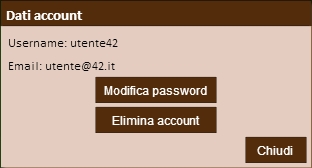

Manuale
5 Gestione dell'Account
Dalla barra superiore della schermata di gioco è possibile accedere a una finestra in cui è possibile modificare la password corrente o eliminare per sempre l'account.
Da questa finestra è possibile modificare le impostazioni del proprio account.
5.1 Cambiare la Password Torna Su
Se hai intenzione di cambiare la password necessaria per accedere al gioco basta premere il pulsante "Modifica password".
Apparirà una finestra che ti chiederà prima di inserire la password attuale, la password nuova e la conferma della stessa.
Alla conferma finale la password verrà finalmente cambiata.
5.2 Eliminare il proprio Account Torna Su
Se invece vuoi eliminare definitivamente l'account di gioco, devi premere il pulsante "Elimina account".
Alla conferma, l'account verrà definitivamente rimosso dal sistema, non sarà più possibile effettuarne il recupero, e lo username utilizzato verrà nuovamente reso disponibile.
5.3 Uscire dal Gioco Torna Su
È possibile effettuare il logout dal sistema in due modi.
Il primo consiste nel premere il pulsante "Logout" dall'angolo in alto a destra della schermata di gioco. In questo modo si verrà riportati alla schermata di login.
Il secondo consiste nel non effettuare alcuna azione per 180 secondi (3 minuti).
In questo modo il server disconnetterà automaticamente l'utente, mentre il client quando si accorgerà della disconnessione informerà l'utente e ripristinerà la schermata di login.
5.4 Segnalazione Bug Torna Su
Se si riscontra un malfunzionamento, è possibile inviare una segnalazione ricorrendo al sistema di tracciamento bug di GitHub, raggiungibile al seguente link: Issue Tracker (sito esterno).
Dopo aver registrato un account ed essersi autenticati a questo sito, è sufficiente premere il pulsante "New Issue".
Sarà necessario quindi indicare il tipo di bug riscontrato, i passi necessari per riprodurlo e la gravità del problema.
Infine bisogna premere il pulsante "Submit a new issue" per confermare l'invio della segnalazione.